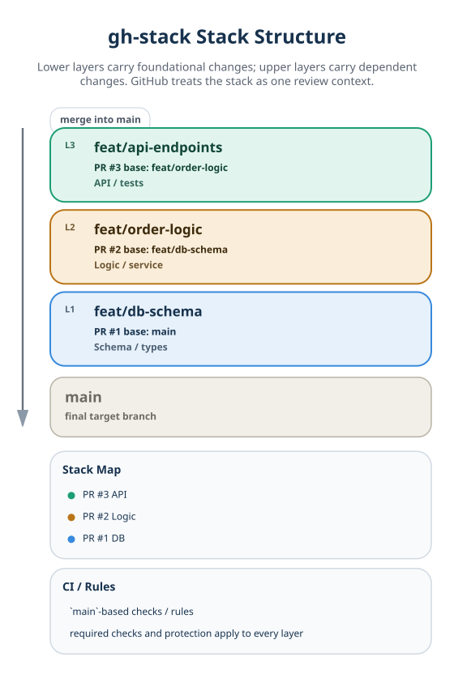
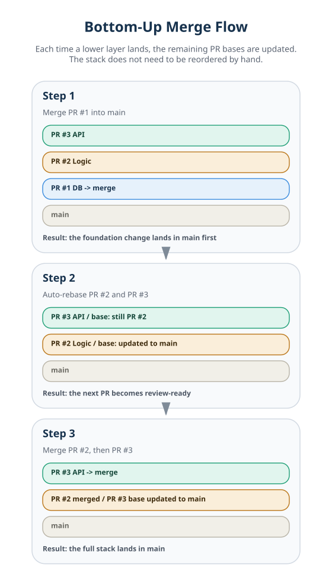

gh-stack Explained: Why Branching Strategy Changes in the Age of AI Multi-Agent Development¶
For / Key Points
For: Engineers using Claude Code, GitHub Copilot Coding Agent, Cursor, or similar tools who want to make parallel AI-agent development work in real teams
Key Points:
- gh-stack matters not only because it splits large PRs, but because it shifts conflict surfaces through dependency-ordered branches
- Stack Map,
main-based CI and protection rules, and cascading rebases move review and integration forward with less manual coordination npx skills add github/gh-stackgives agents a starting point for learning how to cut, stack, and restack branches
Running three AI agents in parallel does not make development cleanly 3x faster. The real bottleneck is not model quality, but Git workflows that pile multiple diffs onto the same feature branch. GitHub's gh-stack reframes that branching bottleneck from "how to split a PR" into "how to stack branches in dependency order."12
This article asks one question: why has the bottleneck in parallel AI-agent development shifted from prompts and model quality to branching strategy? The short answer is that gh-stack should be read less as a review convenience and more as branch infrastructure that keeps agents from trampling each other's work surfaces.
Current Status
As of April 18, 2026, GitHub Stacked PRs remains in private preview and still requires waitlist-based access. It is not generally available yet. 14
Before | Why Three Agents Still Don't Make Development 3x Faster¶
The first failure mode appears when multiple agents share the same feature branch. In an e-commerce order flow, three agents may look separated by responsibility, but their dependency files overlap almost immediately.
| Agent | Primary Responsibility | Files Touched | Likely Conflict Surface |
|---|---|---|---|
| Agent A | DB schema definition | models/order.py, migrations/, config/db.yaml | Model definitions, connection settings |
| Agent B | Order processing logic | services/order.py, models/order.py | Shared model definitions, type changes |
| Agent C | REST API implementation | api/orders.py, tests/conftest.py, config/db.yaml | Test fixtures, config, API contract |
If all three push toward the same feature/orders branch, models/order.py and config/db.yaml collide first. Once API work starts, tests/conftest.py becomes another hotspot. Each diff may look locally correct, but the moment they converge onto one branch head, consistency starts to break.
The problem here is not just that AI agents are "still immature." The structural issue comes first: multiple workers are fighting over the same branch head. On top of that, agents are still weak at reconstructing 3-way merge context safely. The result is that humans get pulled back into manual diff comparison and integration work.
If the workaround is to give everything to one agent, the failure mode simply changes. The branch conflict goes away, but the output turns into a 1,000-line-plus PR. Review quality drops, merge latency rises, and the path to main gets slower. In other words, the old model creates a lose-lose tradeoff: parallelism increases conflicts, while single-agent ownership inflates the PR.
After | gh-stack Shifts the Conflict Surface into Ordered Layers¶
With gh-stack, the same three tasks can be reorganized not around "who owns what" but around "what depends on what." Put the foundational change at the bottom and the dependent change above it, and the most common single-branch conflicts can be avoided at the design stage. 25
- Layer 1: Cut DB schema work into
feat/db-schema - Layer 2: Stack order-processing logic on top as
feat/order-logic - Layer 3: Stack REST API implementation on top as
feat/api-endpoints
Now Agent A owns the bottom layer, Agent B the middle, and Agent C the top. When models/order.py changes in the bottom layer, upper layers do not collide on the same shared branch head. Instead, they restack their diffs on top of the updated lower layer. That is the practical meaning of the cascading rebase model described in GitHub's docs. 23
Calling this a "structural solution" does not mean every merge conflict disappears. More precisely, it means that the specific class of conflict caused by multiple agents pushing onto the same feature-branch head can be reduced in advance through dependency-ordered stacks. When the dependency split is correct, review and integration become a matter of moving upward from the bottom layer.
| Lens | Traditional Single Branch | After gh-stack |
|---|---|---|
| How conflicts appear | Diffs concentrate on the same head | Lower-layer changes propagate upward |
| PR size | Tends to bloat into one large PR | Small PRs split by layer |
| Rebase responsibility | Humans manually rebase in sequence | UI/CLI handles cascading rebases |
| Review context | Dependency order is hard to see | Stack Map shows where each PR sits |
The Three Pillars That Make gh-stack Work¶
gh-stack works not because it creates more branches, but because GitHub understands dependency order, review context, and merge order as part of the workflow. 12
1. Stack Structure¶
Only the bottom PR targets main; each PR above it uses the branch below as its base. That lets the pull-request graph itself express "foundation changes below, dependent changes above." GitHub's official examples use the same pattern: data models or schema at the bottom, API or UI above them. 2

2. Stack Map and main-Based Evaluation¶
GitHub's PR UI shows a stack map so reviewers can immediately see where a PR sits in the chain. More importantly, even intermediate PRs are evaluated as diffs that ultimately target main, so branch protection rules and CI still run from the perspective of the final merge destination. In practice, that means PR #2 can be based on PR #1 while still being checked as something that will eventually land in main. This removes much of the old weakness of stacked workflows, where only the bottom PR felt truly "real" from a CI perspective. 126
3. Bottom-Up Merge and Automatic Rebase¶
Merges move from the bottom upward. Each time a lower layer lands, the remaining PRs are automatically rebased, and the next bottom-most PR is retargeted so it can point directly at main. GitHub documents support for merge commit, squash merge, and rebase merge, and also states that merge queue is stack-aware. 26

AI Agent Integration | What npx skills add github/gh-stack Actually Means¶
GitHub's official documentation places npx skills add github/gh-stack directly on the landing page, and separately publishes a dedicated section titled Using AI Agents with Stacks. There, GitHub explains that agents can plan a stack, cut branches at the right layer, move up and down the stack for mid-stack changes, and execute rebases plus PR creation. 15
The practical implication is that gh-stack is not just a CLI for humans. It can also serve as a procedural guide for teaching agents how to cut, stack, and restack branches. Based on how the landing page and the AI-agents guide are framed, GitHub appears to be positioning gh-stack not merely as a PR organization feature, but as a shared branch choreography for agents. In plain terms, that choreography means the order in which branches are created, stacked, updated, and re-applied.
That opens three clear uses in practice.
- Hand an agent a large diff and say, "Split this into a stack"
- Design Layers 1-3 first, then assign each agent its branch responsibility
- When review feedback lands on a lower layer, send the agent back down, fix it there, and restack the upper layers
The idea is close to Claude Code hooks and skills, as well as other coding-agent instruction systems. Parallelism pays off only when agents learn not just how to write code, but also how to move branches safely through integration order.
Constraints and Caveats¶
The constraints are clear before adoption. Availability, repository boundaries, dependency direction, stack restructuring, and merge behavior all matter. 156
- As of April 18, 2026, the feature is still in private preview and requires repository-level enablement. Joining the waitlist does not mean every team can use it immediately. 14
- Stacks are designed for a single repository, and cross-fork stacks are not supported. In fork-based contribution models, the branch chain cannot be preserved as-is, so the workflow does not map cleanly onto OSS contribution patterns. 6
- The workflow still depends on a linear dependency order. If the dependency split is wrong, rebases will stop like any other rebase.
gh-stackis not magic conflict removal; it is infrastructure that reduces a specific class of conflicts. 6 - Reordering or replacing branches mid-stack is still effectively a restructuring workflow using commands like
unstackandinit --adopt. It is not well suited to tasks with strong mutual dependencies. 56 - Squash merge is officially supported, but without team-level understanding it can still confuse reviewers, especially when commit hashes change while upper layers remain. Merge policy needs shared understanding. 26
Summary¶
The key takeaway is simple. What matters in AI multi-agent development is not only smaller PRs, but the ability to avoid multiple agents fighting over the same branch head. That is why gh-stack is better understood as branch infrastructure for managing integration order on GitHub than as a mere review aid.
The next thing to design is not just model choice, but branch strategy: which agent belongs to which layer, and in what order each layer moves toward main. GitHub now presents stack map, main-based CI, and AI agent skills in the same product story. That strongly suggests the bottleneck has shifted away from UI or CLI ergonomics and toward the design of integration order itself. 125